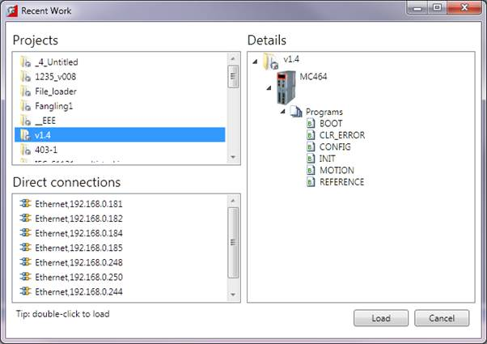

The "Recent Work Dialog" lists recently used projects and connections to allow the user to quickly switch to a different, recently used, project or connection. When a project is selected the "Details" pane on the right of the dialog shows the contents of the project, otherwise, if a connection is selected it shows connection details. Clicking on the load button will load the selected project or connect using the selected connection.